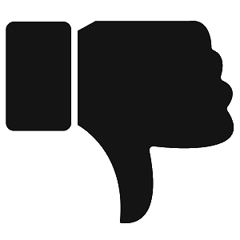

- How much do you like the content of the article?
- The symbol  indicates that you do not like the article's content.
- The symbol indicates that you like the article's content.
- How do you rate the quality of the article?
- The symbol indicates that you think the article has a low quality.
- The symbol
 indicates that you think
the
article has a high quality.
indicates that you think
the
article has a high quality.
- How do you rate the relevance of the article?
- The symbol indicates that you think the article is not relevant.
- The symbol indicates that you think the article is highly relevant.
- To what extend do you think different people can agree with the content of the
article?
- The symbol indicates that you think different readers will not consent to the content of the article.
- The symbol indicates that you think different readers will consent to the content of the article.